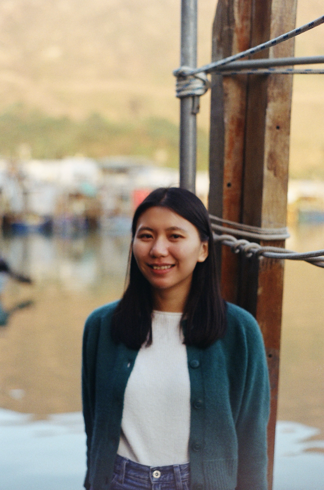

About Me
My name is Laura Chu and I am currently based in Hong Kong. I am a strategic brand storyteller and digital marketer who crafts data-driven narratives that build lasting brand image. My expertise lies in designing social media strategies and content curation that merge creativity with analytics to foster engagement, loyalty and measurable growth. I turn result-driven insights into compelling content that resonates across cultures while maintaining brand authenticity.
Previously at Langham Hospitality Group, I worked as a Social Media Executive for the luxury hospitality group. I had also worked with TAG Aviation, a private aviation company.
For my academic background, I hold a Bachelor's degree in Chinese and Bilingual Studies at The Hong Kong Polytechnic University. I also hold a Master's degree in Psychology of Language from The University of Edinburgh.
In my free time, I like to explore the city with my film camera. Recently, I have gotten more into philosophy and independent film screening, so you may find me at some random cafes discussing philosophy or private cinemas for indie films/documentaries screening after work.
